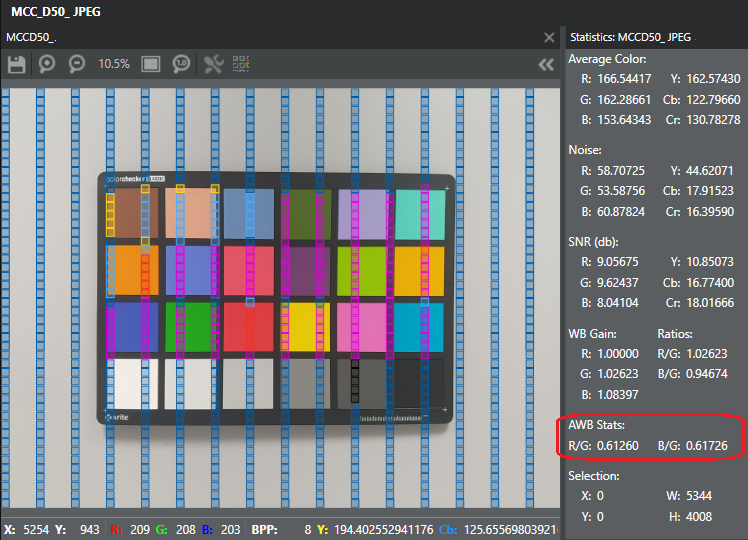
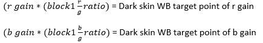
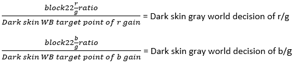

Use the procedures in this section to perform initial tuning for the AWB face-assist scene analyzer parameters.
Compute and record initial values for light skin WB target
- Enable 3A EXIF debug data, then use the golden sample to capture a JPEG image of an MCC chart in D50 illuminant.
- In the Chromatix tool, select and open the MCC D50 image.
- In the toolbar, select .
- Compute the AWB r and b gains as follows:
- Use the cursor to select a square ROI inside Patch 22.
- In the toolbar, select . In the statistics panel, under the label AWB Stats, find the values of R/G and B/G.
 - Calculate the AWB R gain and B gain using the following formulas:

- Compute the light skin WB target as follows:
- Use the cursor to select a square ROI inside Patch 2 (light skin).
- In the toolbar, select . In the statistics panel, under the label AWB Stats, find the values of R/G and B/G.
- Calculate the light skin WB target point using the following formulas:
 Note: Fine tuning parameters are available to add flexibility for the user to adjust the target points computed in this step. If fine tuning parameters are set, the module adjusts the light skin WB target point based on the Lux Index and CCT triggers.
Note: Fine tuning parameters are available to add flexibility for the user to adjust the target points computed in this step. If fine tuning parameters are set, the module adjusts the light skin WB target point based on the Lux Index and CCT triggers.
- Calculate the light skin gray world decision using the following formulas
to estimate the CCT:
 Note: If you need to fine tune the light skin WB target, use this estimated CCT value as a guide for adjusting/adding the trigger ranges in the Light Skin WB Target submodule. Refer to Fine-tune face-assist scene analyzer.
Note: If you need to fine tune the light skin WB target, use this estimated CCT value as a guide for adjusting/adding the trigger ranges in the Light Skin WB Target submodule. Refer to Fine-tune face-assist scene analyzer. - Replace the factory default for light skin WB target point (r, b) in the
Light Skin WB Target submodule with the computed values from Step 6.
- On the AWB tab in the List View, select Face Assist AWB.
- In the Modules box, select Light Skin WB Target.
- Click the arrow next to the first trigger range to open
the full set of values, as shown in the image.

- In the third column (core data), double-click the entry in brackets.
Update the red/blue gain values (r, b) and click outside the box to save
the change.Note: The WB target can also be tuned for preference. For example, if the overall light skin color is reddish, try reducing the WB r gain target.
- Click to save the changes.
Compute and record initial values for dark skin WB target
- Enable 3A EXIF debug data, then use the golden sample to capture a JPEG image of an MCC chart in D50 illuminant.
- In the Chromatix tool, select and open the MCC D50 image.
- In the toolbar, select .
- Compute the AWB r and b gains as follows:
- Use the cursor to select a square ROI inside Patch 22.
- In the toolbar, select . In the statistics panel, under the label AWB Stats, find the values of R/G and B/G.
- Calculate the AWB R gain and B gain using the following
formulas:
- Compute the dark skin WB target as follows:
- Use the cursor to select a square ROI inside Patch 1 (dark skin).
- In the toolbar, select . In the statistics panel, under the label AWB Stats, find the values of R/G and B/G.
- Calculate the dark skin WB target point using the
following formulas:
Note: Fine tuning parameters are available to add flexibility for the user to adjust the target points computed in this step. If fine tuning parameters are set, the module adjusts the dark skin WB target point based on the Lux Index and CCT triggers.
- Calculate the dark skin gray world decision using the following
formulas to estimate the CCT:
Note: If you need to fine-tune the dark skin WB target, use this estimated CCT value as a guide for adjusting/adding the trigger ranges in the Dark Skin WB Target submodule. Refer to Fine-tune face-assist scene analyzer. - Replace the factory default for dark skin WB target point (r,
b) in the Dark Skin WB Target submodule with the computed values from Step 6.
- On the AWB tab in the List View, select Face Assist AWB.
- In the Modules box, select Dark Skin WB Target.
- Click the arrow next to the first trigger range to open
the full set of values, as shown in the image.

- In the third column (core data), double-click the entry in brackets.
Update the red/blue gain values (r, b) and click outside the box to save
the change.Note: The WB target can also be tuned for preference. For example, if the overall dark skin color is reddish, try reducing the WB r gain target.
- Click to save the changes.
Adjust face AWB weight
- If the project is for the main camera, use a lower weight for face-assist scene
analyzer than for other scene analyzers.
- Open the project and click the AWB tab.
- In the List View tab, select Face Assist AWB.
- In the Tuning Modules area, adjust the SA Weight parameter as needed.
- Click to save the changes.
- If the project is for the front camera, use a higher weight for face-assist
scene analyzer than for other scene analyzers.
- Open the project and click the AWB tab.
- In the List View tab, select Face Assist AWB.
- In the Tuning Modules area, adjust the SA Weight parameter as needed.
- Click to save the changes.
Tune for preference
The factory defaults for the following parameters should be adequate, but they can be
fine-tuned to meet your preference. Refer to Fine-tune face-assist scene
analyzer.
- Face Select Threshold
- Convergence Speed for Face AWB
- Dark Pixel Threshold
- Saturation Pixel Threshold
- Light Skin WB Target
- Dark Skin WB Target